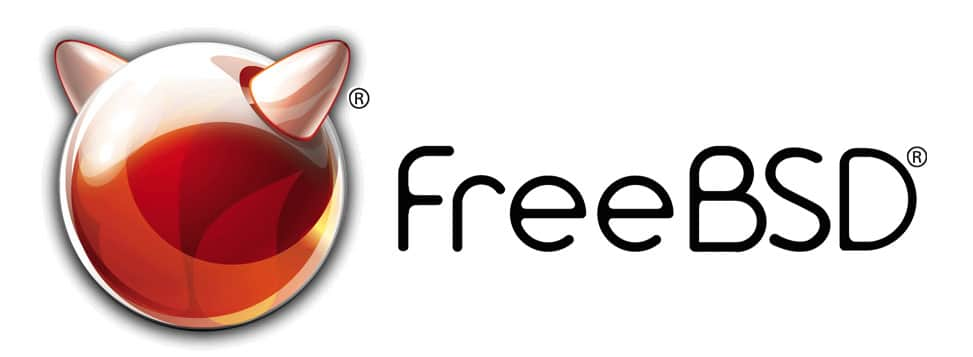

ОС семейства BSD
 FreeBSD - самая попуялрная ОС семействаНа самом деле, операционные системы семейства BSD ныне совсем непопулярны. Многие считают, что эти ОС уже морально устарели и не годятся для реального использования. Но семейство ОС BSD активно развивается и по сей день.
В 1973 году Боб Фабри, преподаватель университета Беркли, приобрёл копию Unix вместе с её исходными кодами для запуска на машина в кампусах университета. Архитектура UNIX сильно понравилась студентам, поэтому они активно начали изучать исходные коды и изменять их. Шло время, наработки студентов накапливались, и в 1997 году Билл Джой решил выпустить первую реализую версию 1BSD.
Первая версия ОС под названием 1BSD содержало следующее:
- Компилятор и профайлер Pascal, написанный Кеном Томпсоном.
- Редактор ex.
- Улучшенный Unix-shell.
- Ряд мелких инструментов.
Возможно, были и другие разработки, но они не вошли в первую версию из-за возможных проблем с лицензионным соглашением.
После публикации: 30 магнитных лент с 1BSD были разосланы по университетам, а 35 – проданы за не очень большую цену, желающие смогли модифицировать исходные коды ОС (никто не делал коды 1BSD закрытыми). Наработки же позже возвращались в Беркли, и использовались для создания новых версий системы. Именно эта новая модель разработки программ позже и стала называть Open Source (сводное программное обеспечение).
Результатом дальнейшего изучения Unix и разработки новых приложений стала версия 2BSD, выпущенная в 1979-ом году. Как и прошлая версия, ОС не имела значительных отличий от оригинала, зато добавляла новые приложения. Во второй версии появился сетевой пакет Berknet, позволивший обмениваться письмами и выполнять удалённые команды внутри внутренней сети Беркли. Этот же пакет позволял выходить в APRANET. Он был создан Эриком Шмидтом в рамках дипломной работы.
Позже 2BSD развился, и появились пакеты 2.11BSD, 3BSD, 4BSD. На очереди был 5BSD, но компания AT&T запретила выпускать ОС с таким названием, побоявшись создать путаницу с коммерческой System 5. Как результат, следующие версии, разрабатываемые в Беркли, стали называться 4.1BSD, 4.2BSD и т.д. В это же время появился спонсируемый правительством США стек сетевых протоколов TCP/IP, что подтолкнуло университет к созданию ОС с сетевыми интерфейсами.
Упомянутые выше пакеты являлись дополнениями к UNIX, и не были полноценными операционными системами. Кроме того, лицензионные требования постоянно ужесточались. Один из вариантов пакета 4.3BSD, известный как 4.3BSD-Tahoe, был доступен только при условии приобретения исходной лицензии AT&T, которая определяла правила распространения ОС UNIX в семидесятые и восьмидесятые годы. Но в 1989 г. ситуация изменилась: разработчики из Беркли выпустили пакет Networking Release 1, который допускал свободное распространение кода независимо от того, имел ли получатель лицензию на исходный код AT&T. Это был первый и очень важный шаг на пути к современным системам с открытым исходным кодом. Без изменений в правилах лицензирования, впервые воплощенных в Networking Release 1, не было бы современной FreeBSD.
В 1991 году был опубликован Networking Release 2. Пусть название было и похожим на предыдущую версию, сходство между пакетами были колоссальные. Networking Release 2 практически являлась полноценной ОС: в ней отсутствовали лишь 6 файлов с исходными кодами ядра UNIX. В течении полугода Билл Джолиц переписал эти файлы, создав пакет 386/BSD, системы, которая стала непосредственной предшественницей NetBSD, OpenBSD и FreeBSD. Система предназначалась для работы на последних на то времени моделях процессоров фирмы Intel. Кстати, FreeBSD и сейчас тесно связана с платформой x86, хотя её и пытаются перенести на другие платформы.
С 1993 г. (дата рождения системы как отдельного проекта) FreeBSD целенаправленно развивается независимо от других систем. Она, конечно же, заимствует что-то из других проектов с открытым исходным кодом; иногда заимствуют ее код. Старший номер версии увеличивается в среднем каждые несколько лет. В начале 2002 г. Была выпущена версия 4.5, а версия 5.0 появилась в конце того же года.
Однако, не смотря на бывшую популярность, семейство операционных систем BSD проиграла в популярности GNU/Linux. На то есть ряд причин:
Во-первых, из-за юридических проблем с AT&T, разработка BSD-систем значительно усложнялась, хотя изначально видимых ограничений компания ни на кого не налагала.
Всё начало меняться в начале 80-х, когда решение AT&T продавать Unix привело к появлению спроса на свободный клон Unix-а, но без дорогостоящей лицензии. Разработчики BSD в течение нескольких лет трудились над тем, чтобы отделить их код от кода AT&T. Они медленно, но верно шли к созданию собственной полноценной Unix-like операционной системы.
Их цель была достигнута в июне 1991 года, с выпуском BSD Net 2. В отличие от предыдущего релиза Net 1, который состоял по большей части из кода для работы с сетями и не был самостоятельной операционной системой, Net 2 была именно полноценной Unix-like системой.
И так как BSD Net 2 шла с лицензией, которая давала доступ к исходном коду и право свободно распространять как ее саму, так и любые ее производные, она была по сути первой open source операционной системой в истории. Хотя самого понятия "open source" в то время еще не было, и лицензия BSD не соответствовала требованиям Free Software Foundation Ричарда Столлмана, тем не менее Net 2 стала большим шагом вперед для всего сообщества свободного программного обеспечения. Это доказало, что написать свободный клон Unix - реально.
Выпуск Net 2 имел большое значение также и потому, что на тот момент это был единственный свободный клон Unix, который действительно работал. Линус Торвальдс выпустил первую версию ядра Linux лишь через несколько месяцев, причем прошло более чем два года, прежде чем оно стало достаточно применимым. Тогда как в проекте операционной системы GNU, которую с 1984 года разрабатывали Ричард Столлман и его сторонники, еще не было своего рабочего ядра.
Одной из причин были судебные тяжбы между Berkeley Software Design Inc. (BSDI) и Unix Systems Labs (USL). В начале 90-х компания USL стала владельцем операционной системы AT&T Unix и подала в суд на BSDI за нарушение своих авторских прав. Неудивительно, ведь они разрабатывали свободную альтернативу их продукту. В марте 93 года суд отклонил большинство их претензий, но юридические баталии все еще продолжались вместе с контр-иском Калифорнийского университета. И только в начале 94 года, когда уже компания Novell стала владельцем Unix, все юридические споры были окончательно урегулированы.
Если смотреть в целом, все эти юридические проблемы на самом деле не помешали распространять и использовать операционную систему BSD. Но возникшие сомнения в защищенности ее юридического положения однозначно замедлили это. По всей видимости, именно поэтому возник тот самый исторический шанс для ядра Linux, который позволил ему неожиданно "выстрелить". А ведь это был просто хобби-проект одного финского студента, в отличие от профессиональной разработки группой ученых ведущего американского университета.
Медленный рост BSD не получится объяснить только лишь юридическими проблемами. В конце концов у GNU/Linux тоже были аналогичные серьезные проблемы в начале 2000-х, когда SCO Group подала в суд на нескольких крупных вендоров Linux и корпоративных пользователей. Эти тяжбы в целом завершились только в 2007 году в пользу Linux. Но тем не менее они не оказали такого негативного воздействия, популярность Linux-а продолжала расти.
Одна из причин почему BSD не смогла обрести такую популярность среди технически продвинутых программистов и админов ("хакеров") заключается в характере лицензии Net 2, которая разрешала практически все. В отличие от лицензии GPL проекта GNU, которая обязывает раскрывать исходный код всех производных продуктов, лицензия BSD к этому не обязывает. Программисты могут свободно заимствовать и модифицировать код для любых задач, не делая его публичным. Это очень хорошо для коммерческих проектов, но плохо для "хакеров", которые ценят открытость и прозрачность.
Третья важная причина заключается в том, что BSD разрабатывалась относительно небольшой организованной группой профессиональных программистов из Беркли. В то время как разработка ядра Linux велась Линусом Торвальдсом с помощью широкой и гибкой сети добровольцев раскиданных по всему миру. Используя сравнения Эрика Раймонда из его знаменитого эссе, создание BSD было подобно строительству величественного "собора", который тщательно возводила небольшая группа мастеров своего дела. Тогда как развитие Linux-а выглядело как стихийный "базар", в котором дела решались быстро, новые версии появлялись часто, и единственным требованием к членам этой разношерстной команды была способность решать насущные вопросы.
"Соборный" подход также был характерен для самого проекта GNU, еще задолго до появления Linux, но именно Linux показал как можно быстро обрести популярность через частые релизы. Таким образом Линус Торвальдс случайно открыл совершенной новый, более эффективный подход в разработке, благодаря которому Linux смог очень быстро эволюционировать, гораздо быстрее чем BSD.
Разумеется, проект BSD не мог просто исчезнуть после стремительного взлета Linux в 90-х. Более того, множество свободных операционных систем, берущих начало из Net 2, в первую очередь NetBSD, OpenBSD, FreeBSD, продолжает жить и здравствовать, пусть с небольшим, но зато преданным комьюнити.
В то же время, характер лицензии BSD привел к ее популярности среди разработчиков проприетарного ПО. Самый яркий пример — это компания Apple, которая использовала исходники BSD в своих операционных системах macOS и iOS. Учитывая это, BSD — в той или иной форме — имеет сегодня огромную армию поклонников, хотя большинство владельцев макбуков и айфонов даже не подозревают, что их устройства используют "open source" код, который разрабатывали в Беркли с 80-х до начала 90-х.
Возможно, это печально, ведь программные решения Apple закрыты настолько, насколько это возможно. Это прямая противоположность того, о чем мечтали создатели BSD, когда выпустили Net 2 в 1991 году. Как бы то ни было, итог получился интересный.